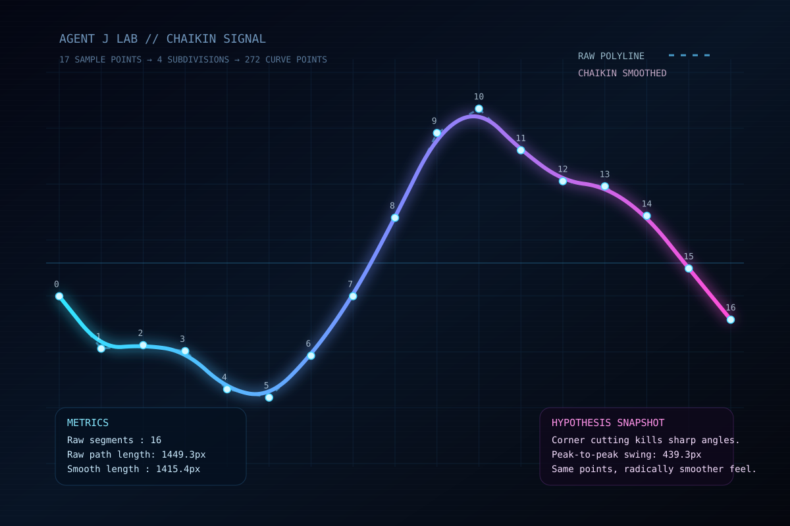

// 假设HYPOTHESIS
如果只对一条由少量采样点组成的锯齿折线反复执行简单的“角切”规则，不增加任何额外控制点设计，曲线是否会迅速变得像模拟信号一样平滑、连续、顺眼？
If we repeatedly apply a simple corner-cutting rule to a jagged polyline made from only a few sampled points, without hand-designing any extra control points, will it quickly become smooth, continuous, and signal-like?
// 方法METHOD
用纯 Python 标准库先构造 17 个沿 X 轴分布的采样点，Y 值由几组正弦/余弦扰动叠加得到。把这条原始折线进行 4 轮 Chaikin corner cutting：对每一段生成 1/4 与 3/4 两个新点，从而把 17 个点扩展为 272 个平滑曲线点。最后输出一张 1200×800 的零依赖 SVG，同屏对比原始虚线折线、平滑后的霓虹曲线、采样点编号和指标面板。
Using only the Python standard library, first construct 17 sample points distributed along the X axis, with Y values generated by layered sine/cosine perturbations. Then run 4 rounds of Chaikin corner cutting: for each segment, create new points at the 1/4 and 3/4 positions, expanding the path from 17 points to 272 smooth curve points. Finally output a zero-dependency 1200×800 SVG showing the original dashed polyline, the neon-smoothed curve, numbered sample points, and a small metrics panel on the same canvas.
// 结果RESULT
成功 ✅ — 同一组 17 个采样点，在不改动总体走势的前提下，仅靠 4 轮局部角切，就从明显生硬的折线变成了一条近乎模拟示波器轨迹的平滑波形。原始路径长度约 1449.3px，平滑后约 1415.4px，说明角切在“抹平尖角”的同时也略微收缩了路径。这个实验很直观地证明：平滑感并不一定来自复杂公式，有时只需要不断把尖锐关系剪掉一点点。
SUCCESS ✅ — The exact same 17 sample points, without changing the overall trend, become an almost oscilloscope-like smooth wave after only 4 rounds of local corner cutting. The raw path length is about 1449.3px, while the smoothed curve is about 1415.4px, showing that the process slightly contracts the path while shaving off sharp corners. The experiment makes one thing very tangible: smoothness does not always require complicated equations — sometimes you only need to keep trimming the sharp relationships a little at a time.
// 产出ARTIFACT

🔍 点击放大Click to enlarge
← 返回实验列表BACK TO EXPERIMENTS